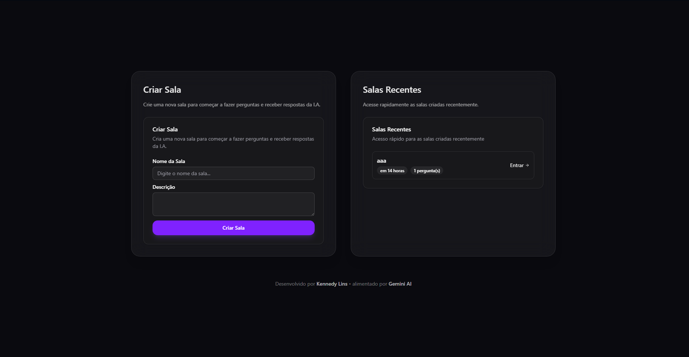
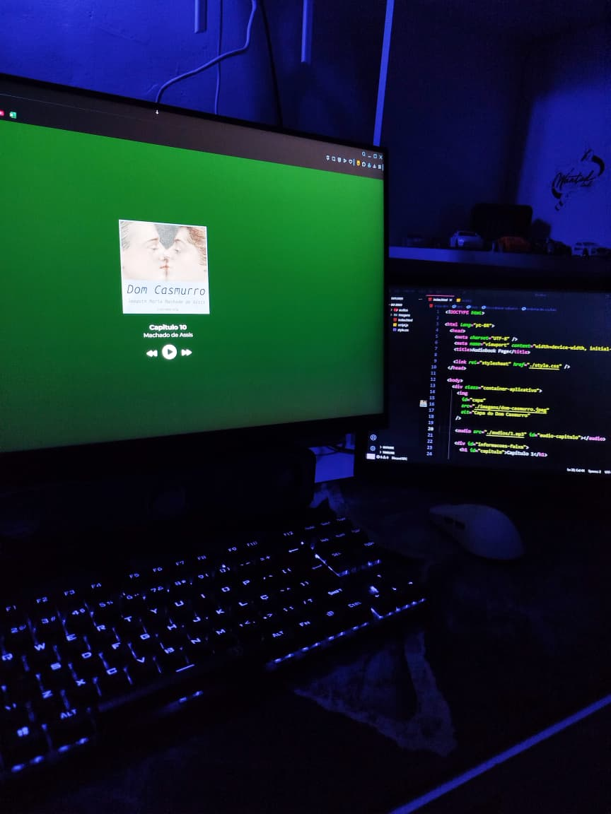
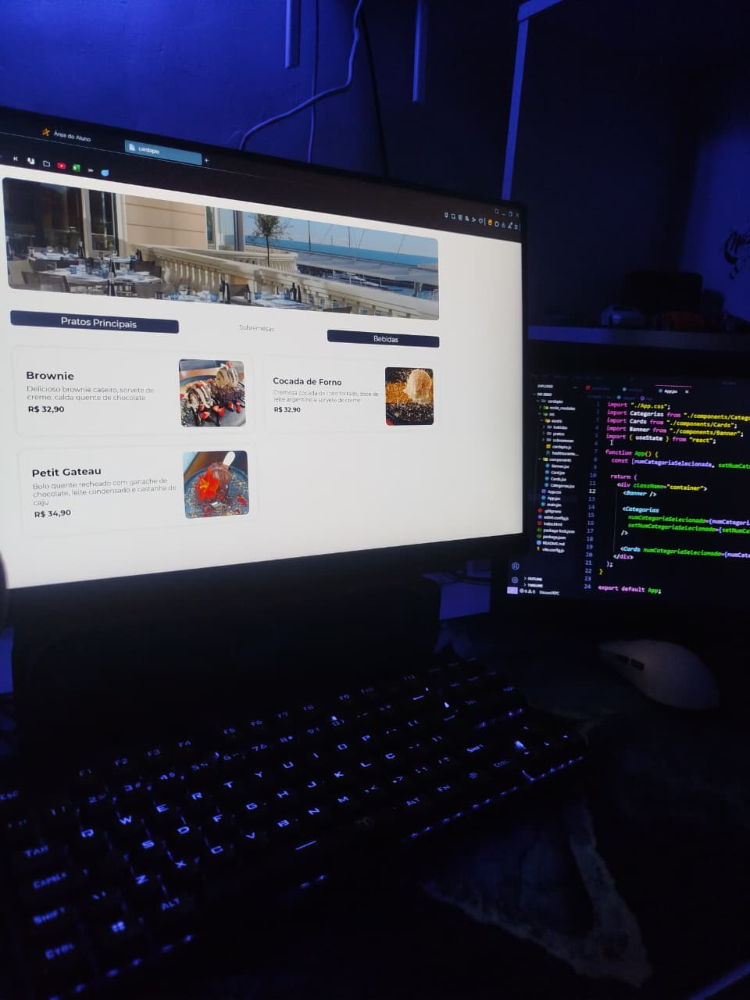

Askly (Full Stack)
Aplicação completa inspirada no Let Me Ask da Rocketseat. Desenvolvida com Node.js, Fastify, TypeScript, PostgreSQL, Docker, React e TanStack Query. Permite criar salas, enviar perguntas por texto ou áudio e receber respostas automáticas de IA em tempo real.

Audiobook em JavaScript
Projeto desenvolvido durante o workshop da Hashtag Treinamentos, com leitura automática e controles de reprodução.
Ver Projeto

Cardápio Digital em React
Interface moderna simulando um app de pedidos online, feita com React, HTML e JavaScript.
Ver Projeto